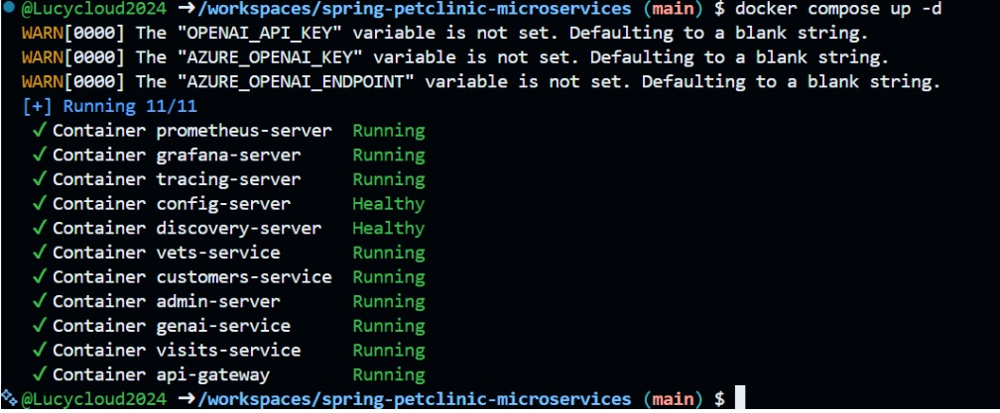
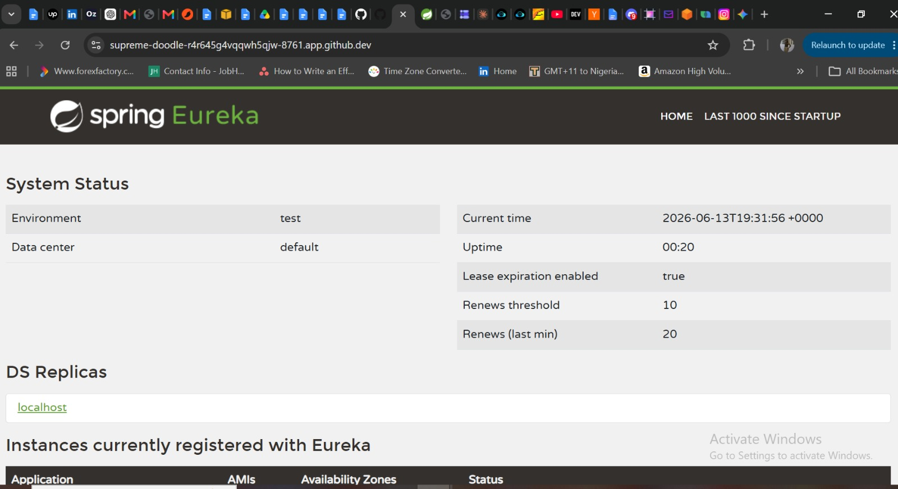
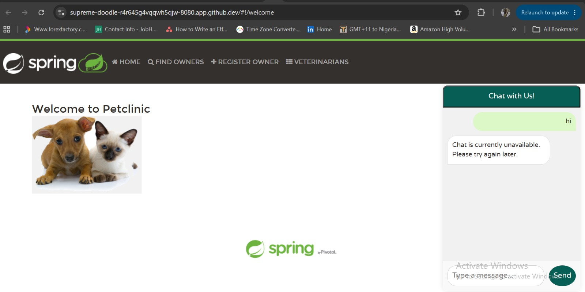
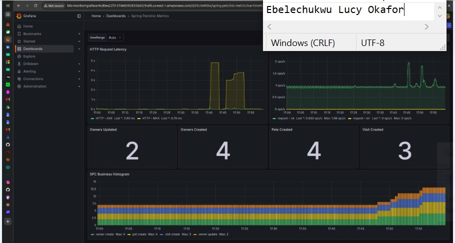
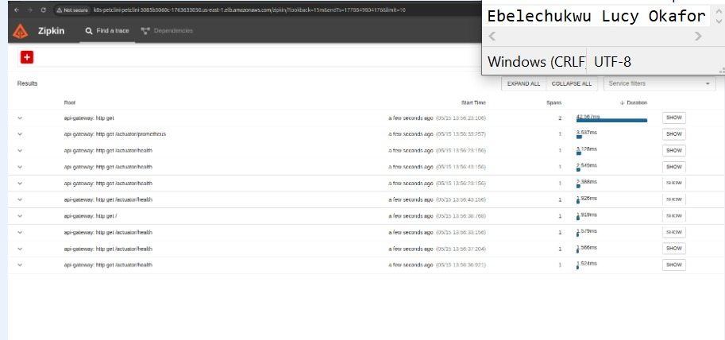
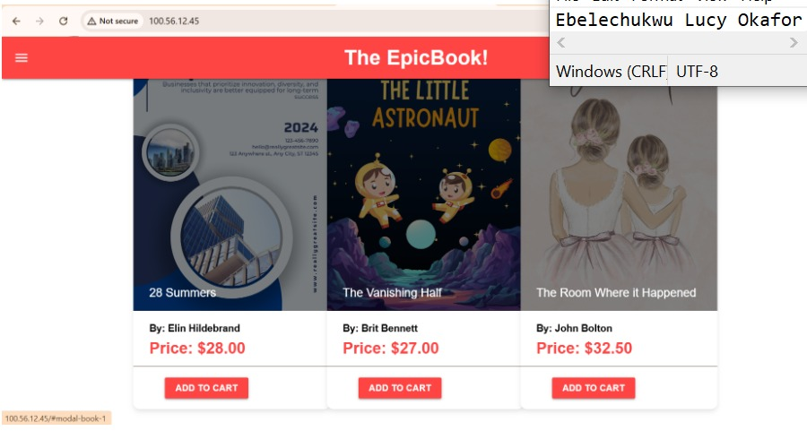
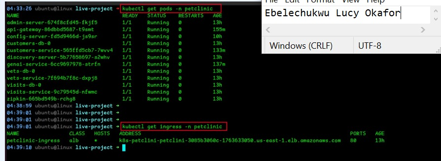
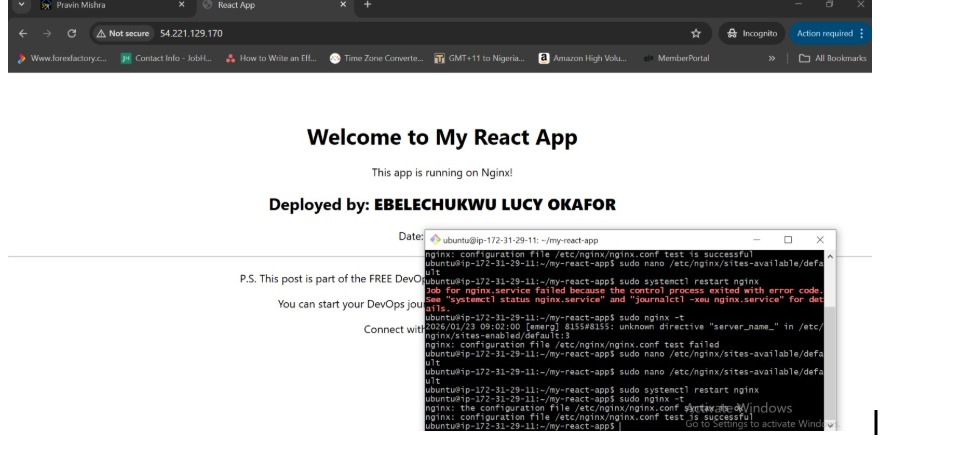

50+ practical projects delivered across Docker, Kubernetes, Terraform, CI/CD, AWS, Azure, and Observability. Real infrastructure. Real evidence.
DMI Cohort 2 — Team Project (App / Docker Lead) + Personal Capstone
Situation: An 8-service Spring Boot microservices application needed to be containerised, built, and deployed with full observability by a team of 11 engineers working across 6 disciplines.
Action: As App/Docker Lead I wrote multi-stage Dockerfiles for all 8 services using the shared docker/Dockerfile pattern, built all images using the Maven buildDocker profile targeting linux/amd64 for AWS EKS compatibility, fixed a critical YAML duplicate ports key error in docker-compose.yml, implemented healthcheck-based startup ordering (config-server first, then discovery-server), and tagged all images with Git SHA for traceability. Configured full observability stack — Prometheus scraping every 15 seconds, Grafana dashboards, and Zipkin distributed tracing. Created alert.rules.yml with PetClinicServiceDown, HighErrorRate, and SlowResponseTime alerts. Tested alerts by stopping vets-service — fired within 30 seconds. Also deployed personal capstone via GitHub Codespaces as substitute for suspended AWS account.
Result: All 8 Docker images built for linux/amd64. Full stack of 11 containers deployed with one command. Images pushed to AWS ECR. Prometheus targets all UP. Grafana showing live metrics. Zipkin traces visible across 4 services. Alert fired in FIRING state within 30 seconds.
📸 Deployment Evidence
docker compose ps — All 11 Containers Running

Eureka Dashboard — All Services Registered

PetClinic App — Live in Browser

Grafana — Live Metrics Dashboard

Zipkin — Distributed Traces Across Services

Week 11–13 — Azure DevOps CI/CD Pipeline Project
Situation: Deploy a full-stack Node.js bookstore application to Azure cloud with fully automated infrastructure provisioning and zero manual server configuration using two separate CI/CD pipelines.
Action: Built two Azure DevOps pipelines — infra-epicbook (Terraform) and theepicbook (Ansible). Terraform provisioned Azure VM (Standard_D2s_v3), MySQL Flexible Server, and all networking resources. Ansible playbook installed Node.js, configured config.json pointing to MySQL host, and set up Nginx reverse proxy routing port 80 to port 3000. Fixed multiple pipeline errors including SPN authentication issues, backend.tf variable restrictions, carriage return characters in subscription ID, VM quota issue resolved by switching to D2s_v3, and Nginx port conflicts. Seeded database with 54 books via author_seed.sql and books_seed.sql.
Result: Application live at public Azure IP (20.164.211.94). MySQL database running with 54 books persisted. Complete end-to-end automation — infrastructure and application deployed with zero manual server configuration.
📸 Deployment Evidence
Azure DevOps Pipeline — Successful Deployment Run

🏆 Week 13 Champion Award — DMI Cohort 2
Situation: Demonstrate practical knowledge of all core Kubernetes concepts — Pods, ReplicaSets, Deployments, autoscaling, health probes, and services — in a local kind cluster on WSL2.
Action: Created kind cluster using kindest/node:v1.31.0 on WSL2 after resolving kubelet startup failure by enabling systemd in /etc/wsl.conf. Deployed Pods using both imperative and declarative YAML methods. Created ReplicaSets with auto-healing demonstration. Built Deployments with RollingUpdate strategy (maxSurge:1, maxUnavailable:0), upgraded nginx from v1.21.1 to v1.23.1, verified with rollout status, and rolled back with kubectl rollout undo. Configured HPA targeting 50% CPU with metrics-server (kubelet-insecure-tls patch applied). Demonstrated readiness probes (0/1 READY when broken) and liveness probes (RESTARTS incrementing when broken).
Result: All Kubernetes concepts demonstrated with full screenshot evidence. Awarded Champion of the Week by Pravin Mishra. NodePort and LoadBalancer services configured and tested with port-forward workaround for Kind.
📸 Deployment Evidence
kubectl get pods — Running on kind Cluster

EPIC-5 — DMI Cohort 2 Observability Track
Situation: Configure complete observability for Spring PetClinic — metrics collection, dashboard visualisation, distributed tracing, authentication enforcement, and alerting rules.
Action: Configured Prometheus to scrape all 5 petclinic service endpoints every 15 seconds via /actuator/prometheus. Verified Grafana pre-provisioned dashboard showing live metrics. Enforced Grafana authentication (GF_AUTH_ANONYMOUS_ENABLED=false) — verified HTTP 401 without credentials and HTTP 200 with credentials. Configured Zipkin to collect traces from all services. Created alert.rules.yml with PetClinicServiceDown (fires when up==0 for 30s), HighErrorRate (5xx rate above 5%), and SlowResponseTime (avg response above 1.5s). Rebuilt Prometheus Docker image with alert rules, restarted, and tested by stopping vets-service.
Result: All 5 OBS tasks complete. Prometheus targets all UP. Grafana dashboard with live metrics from 5 services. Zipkin traces visible across 4 services. Alert fired in FIRING state within 30 seconds of stopping vets-service.
📸 Deployment Evidence
Grafana — Live Metrics from 5 Services
Zipkin — Distributed Traces Across Services
DMI Cohort 2 — Agentic AI Integration Project
Situation: Use an AI agent to automatically generate a complete DevOps platform — infrastructure code, Kubernetes manifests, Helm charts, CI/CD pipelines, and security configs — demonstrating how Agentic AI accelerates real DevOps work.
Action: Installed CLAUDE AND KIMCHI agent (v0.1.33) and used the /ferment command to hand off a large autonomous deployment task for Spring PetClinic Microservices. KIMCHI spawned multiple sub-agents working in parallel across 10 phases: architecture analysis (CLAUDE.md) (KIMCHI.md), Docker strategy and build scripts, Terraform infrastructure (51 files), Kubernetes manifests (78 files), Helm charts (109 files across 8 service charts), GitHub Actions workflows (6 pipelines), ArgoCD GitOps manifests (5), observability configs (12 files), security manifests (18 files), and production readiness documentation.
Result: 268 files generated autonomously across all DevOps disciplines in one agent session. Complete production-grade platform generated — demonstrating that Agentic AI dramatically accelerates DevOps work without replacing the engineer's judgment and expertise.
View on GitHub →Week 12 — Docker Capstone Assignment
Situation: Containerise a Node.js application with MySQL backend using Docker best practices — multi-stage builds, network isolation, named volumes, health checks, and Nginx reverse proxy.
Action: Built multi-stage Dockerfile — Node.js build stage then lightweight runtime stage to reduce image size. Created docker-compose.yml with frontend-net and backend-net isolation, named volumes for MySQL persistence, health checks ensuring database is ready before app starts, and Nginx routing port 80 to port 3000. Fixed docker-compose v1 vs v2 syntax issues and port 80 conflicts. Seeded MySQL with 54 books and documented data persistence across container restarts.
Result: Three-tier containerised architecture running — Nginx, Node.js app, MySQL — all isolated in separate networks. Data persisted across restarts. Multi-stage build reduced image size by over 77% compared to single-stage.
Week 1 — DMI Cohort 2 Linux & Nginx Assignment
Situation: Deploy a static HTML/CSS portfolio website on Ubuntu using Nginx, keep it live for 24 hours, and prove ownership with a visible footer.
Action: Forked the DMI portfolio repository and added mandatory ownership proof in the footer. Installed Nginx, copied website files to /var/www/html/, set permissions using chmod 755, and started the Nginx service. Also deployed via GitHub Codespaces using service nginx start (not systemctl — Codespace Alpine Linux does not support it). Site accessible via forwarded port URL with name clearly visible in browser.
Result: Static website live at public URL. Nginx serving HTML/CSS correctly. Deployment maintained for 24+ hours. Demonstrated core Linux skills — package installation, file permissions, service management.
📸 Deployment Evidence
Nginx Static Site — Live in Browser

The projects above are the highlights. During DMI Cohort 2 I completed over 50 practical assignments covering every area of the DevOps lifecycle — from basic Linux commands to deploying production-grade microservices on Kubernetes with full CI/CD, observability, and Agentic AI integration.
See All Work on GitHub →